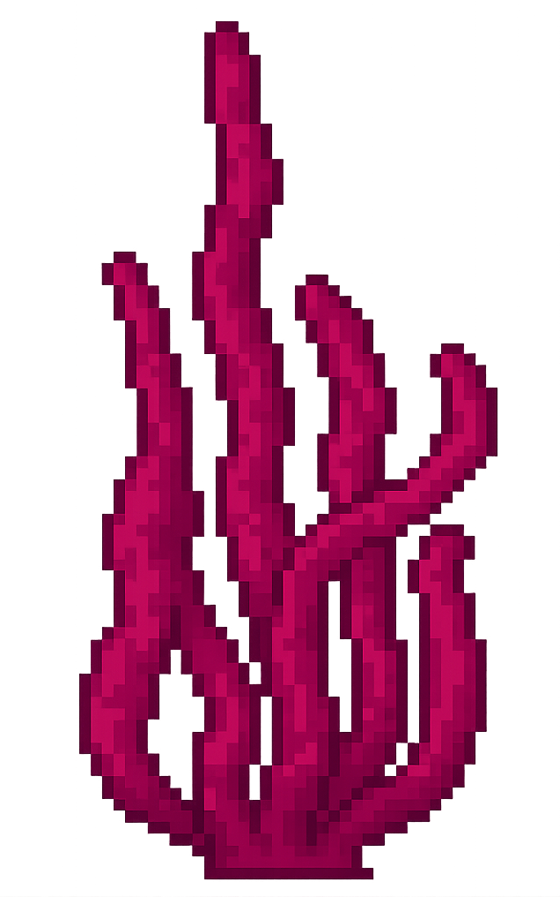
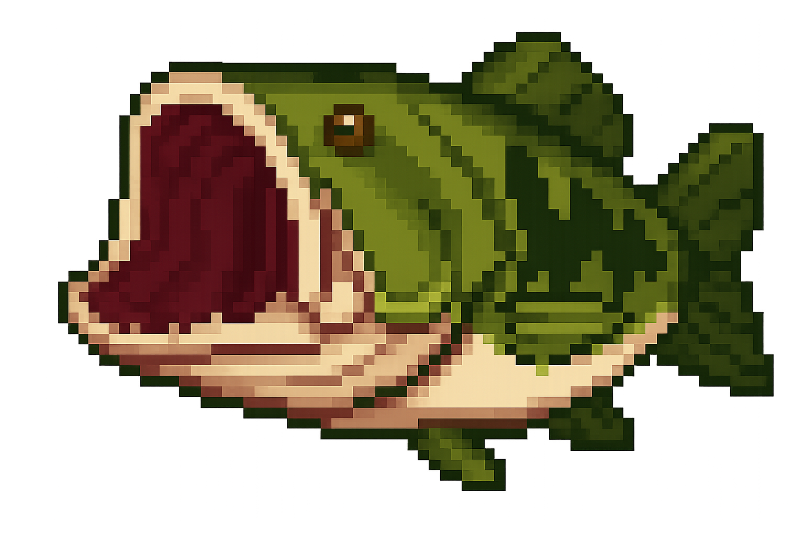

I remade the ancient flash game fishy.
It's written in rust. It compiles to Linux, Mac, Windows, and WASM for the browser. I wrote no code. I described and curated the art for the game, but didn't paint any pixels myself.
I did this in 24 hours. o3 wrote all the code for me. GameTorch generated all the assets. In total, I think the bill was around ~$20 between the code and the assets.
This purpose of this project is threefold:
- To provide the world with another open source example of a rust → wasm → browser game.
- To promote my asset generator, editor, and animator, GameTorch.
- To showcase the absurd restructuring of value that is about to be caused by AI.
 I was cooking and cleaning while my more than sufficient programmers and artists were toiling away for a couple bucks an hour. I didn't interview anyone. I didn't talk to legal. I didn't talk to HR. I never got on the phone or Zoom. I never signed a contract. I never collected or remitted personal info for various regulatory and tax agencies normally involved in hiring someone. I never ran payroll. No one suffered through emotional turmoil and had to take the day off (seriously, everyone should take a mental health day!).
The rate at which code and art is produced far exceeds that of anyone I've interacted with, and I've worked alongside some of the best. The cost of producing the code and art is far less than what it would cost to hire someone, not even accounting for legal and regulatory overhead, which is reasonably an additional 25–40% of their base salary.
Whether we like it or not, a great restructuring of white collar work is underway. This restructuring is accelerating, as models which replace the work are getting better, faster, and cheaper with time. I'm not speculating more than that. I'm not initiating a call to action. I just feel obliged to point out that it's happening.
Are you scared? I was kind of scared. Now, I feel empowered. I just made a game and for every crazy idea that I had, I could implement it in just a few minutes — like the beautiful little light on the angler fish you can play as in the game. As a kid, I had so many grandiose dreams and manic visions of what I would build. Now, it all seems possible. We are still the creators. We're still the curators. We just don't need to be as involved in the nitty gritty, if we don't want to be. But that's also how it's always worked. Ask yourself: what do CEOs and CTOs really do? They implement their grand visions, for ill or good, by ordering around workers. Hopefully they do this with kindness and respect. Everyone will soon be a CEO and a CTO and a Chief Design Officer. As each day passes, everyone becomes more empowered to implement their vision.
Browse, Edit, and Animate the Assets
You can browse, edit, and animate the assets here:
Play Fishy Redux! on Desktop
I haven't precompiled anything yet. So there are no binaries you can just run. But you can build from source. Just clone this repository and run cargo run to play the game on your desktop.
